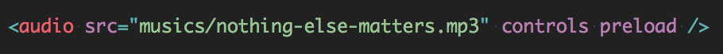

JSMUSIC
Às vezes eu escrevo...
willianjusten.com.brAlguns lugares que já trabalhei...
Como usar áudio no meu site?
Não é bem isso...
A ideia é utilizar o audio
para criar experiências.
Visuais
Interativas
Jogos
Contar histórias
Colocando som na caixa!
Audio Tag
- controls
- preload
- autoplay
- loop
Audio Tag Métodos

Limitações
- Falta de controle preciso do tempo
- Poucos sons podem tocar ao mesmo tempo
- Não tem como fazer pre-buffer
- Não tem como analisar os sons
- Não tem como aplicar efeitos em real time
Web Audio API

Web Audio API Nodes
- Source
- Media Element
- Media Stream
- Oscillator
- Buffer
- Utility
- Script Proc.
- Analyzer
- Channel Splitter
- Channel Merger
- Effect
- Gain
- Biquad Filter
- Delay
- Convolver
- Compressor
- WaveShaper
Web Audio API Nodes
- Source
- Media Element
- Media Stream
- Oscillator
- Buffer
- Utility
- Script Proc.
- Analyzer
- Channel Splitter
- Channel Merger
- Effect
- Gain
- Biquad Filter
- Delay
- Convolver
- Compressor
- WaveShaper
"Hello World" AudioViz
Gráfico das conexões

Criando o audio
var audio = new Audio();
audio.src = 'track.mp3';
audio.loop = true;
audio.autoplay = true;
audio.crossOrigin = "anonymous";Ligar o audio ao contexto
audioContext = new window.AudioContext();
source = audioContext.createMediaElementSource(audio);Criando o analyser
analyser = audioContext.createAnalyser();
fbc_array = new Uint8Array(analyser.frequencyBinCount);Conectando o Analyser ao Destino
source.connect(analyser);
analyser.connect(audioContext.destination);Mas e a parte da animação?
Criando a Animação
function frameLooper() {
window.requestAnimationFrame(frameLooper);
analyser.getByteFrequencyData(fbc_array);
render();
}Exemplo
Quer saber mais?
Último Exemplo